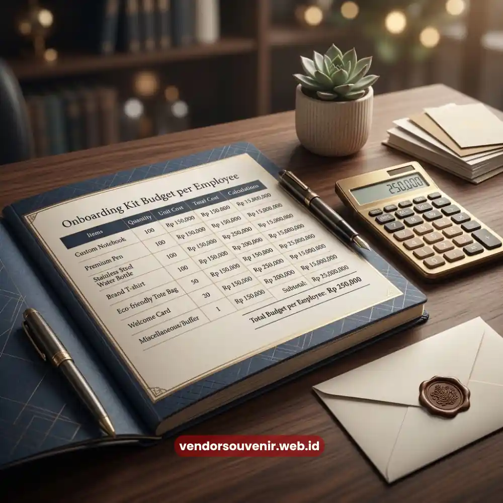
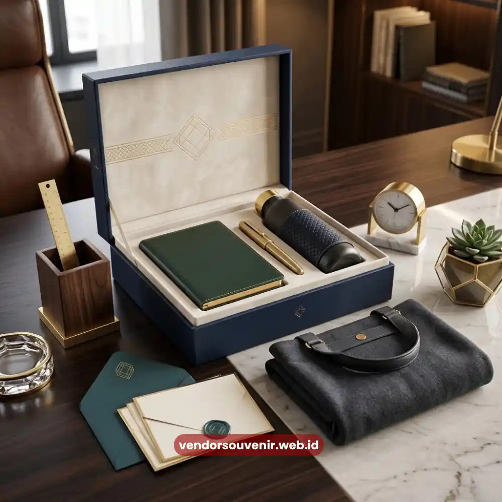

Daftar Isi
Harga souvenir onboarding kit umumnya bervariasi tergantung jumlah item, jenis bahan, teknik custom logo, serta jumlah pesanan yang diminta perusahaan, sehingga anggaran per karyawan dapat berbeda cukup signifikan antar perusahaan.
Memahami faktor-faktor ini membantu HRD menyusun anggaran yang lebih realistis sejak awal.
- Harga souvenir onboarding kit dipengaruhi jumlah item, bahan, dan teknik cetak logo.
- Pemesanan dalam jumlah besar umumnya menurunkan harga satuan per paket.
- Kombinasi tiga hingga lima item cukup untuk anggaran yang seimbang dan efisien.
- Perencanaan anggaran sejak awal membantu menghindari pembengkakan biaya mendadak.
Berapa Kisaran Biaya Souvenir Onboarding Kit per Karyawan?
Kisaran biaya souvenir onboarding kit per karyawan sangat bervariasi tergantung kombinasi item yang dipilih, mulai dari paket sederhana dengan dua hingga tiga item, hingga paket lengkap dengan lima item atau lebih.
Perbedaan ini wajar karena setiap perusahaan memiliki kebutuhan dan standar branding yang berbeda.
Paket sederhana biasanya terdiri dari notebook dan pulpen custom logo, cocok untuk perusahaan dengan anggaran terbatas namun tetap ingin memberikan sentuhan personal pada karyawan baru.
Paket menengah umumnya menambahkan tumbler atau tote bag sebagai pelengkap, sehingga kesan yang diberikan lebih lengkap dan fungsional.
Paket premium biasanya mencakup kombinasi lengkap seperti tumbler stainless, notebook bersampul kulit sintetis, tote bag kanvas, lanyard, serta kemasan kotak khusus.
Paket jenis ini umumnya dipilih oleh perusahaan yang ingin memberikan kesan sangat profesional sejak hari pertama karyawan bergabung, terutama untuk posisi strategis atau program rekrutmen skala besar.
Perlu dipahami bahwa harga akhir tetap dipengaruhi oleh kondisi pasar bahan baku serta kebijakan masing-masing vendor, sehingga estimasi ini sebaiknya dikonfirmasi kembali melalui konsultasi langsung sebelum menetapkan anggaran final.
Apa Saja Faktor yang Membuat Harga Souvenir Onboarding Kit Bervariasi?
Faktor utama yang membuat harga souvenir onboarding kit bervariasi meliputi jenis dan kualitas bahan baku, teknik custom logo yang digunakan, jumlah pesanan, serta kompleksitas kemasan akhir.
Kombinasi keempat faktor ini menentukan posisi harga suatu paket, baik di kategori ekonomis maupun premium.
Jenis bahan menjadi faktor paling mendasar, misalnya perbedaan harga antara tote bag berbahan kanvas standar dengan tote bag berbahan kanvas premium yang lebih tebal dan tahan lama.
Begitu pula pada tumbler, di mana perbedaan ketebalan material stainless dan fitur tambahan seperti vacuum insulated dapat memengaruhi harga secara signifikan.
Teknik custom logo turut berkontribusi terhadap variasi harga, karena laser engraving umumnya membutuhkan biaya produksi lebih tinggi dibanding sablon konvensional, meski hasilnya lebih tahan lama.
Jumlah pesanan juga berperan penting, sebab prinsip skala ekonomi berlaku pada industri percetakan souvenir, di mana harga satuan cenderung menurun seiring bertambahnya jumlah unit yang dipesan.
Kompleksitas kemasan akhir, seperti penggunaan kotak khusus dengan desain custom dibanding kemasan standar berupa tote bag polos, juga turut menambah komponen biaya, meski dampaknya terhadap kesan profesional cukup signifikan.

Perencanaan Budget Souvenir Onboarding Kit yang Matang Sangat Diperlukan
Bagaimana Cara Mengoptimalkan Anggaran Souvenir Onboarding Kit?
Cara mengoptimalkan anggaran souvenir onboarding kit dapat dilakukan dengan menyusun kebutuhan berdasarkan skala prioritas, memanfaatkan pemesanan dalam jumlah besar, serta merencanakan kebutuhan tahunan secara terjadwal.
Pendekatan ini membantu perusahaan mendapatkan hasil maksimal tanpa membebani anggaran secara berlebihan.
Menyusun kebutuhan berdasarkan skala prioritas berarti menempatkan item yang paling sering digunakan karyawan, seperti notebook dan tumbler, sebagai item utama, sementara item pelengkap seperti sticky notes atau payung dapat ditambahkan secara bertahap sesuai ketersediaan anggaran.
Pendekatan ini memastikan dana yang tersedia digunakan untuk item dengan dampak paling besar terlebih dahulu.
Pemesanan dalam jumlah besar juga menjadi strategi efektif untuk menekan biaya per unit, terutama bagi perusahaan dengan proyeksi rekrutmen yang cukup tinggi sepanjang tahun.
Alih-alih memesan secara berkala dalam jumlah kecil, konsolidasi pemesanan dalam periode tertentu dapat menghasilkan harga satuan yang lebih kompetitif.
Perencanaan kebutuhan tahunan secara terjadwal turut membantu tim finance dan HRD memproyeksikan anggaran souvenir onboarding kit secara lebih akurat, sehingga tidak terjadi pembengkakan biaya mendadak akibat pemesanan dalam kondisi terburu-buru.
Perbandingan Sederhana Antar Kategori Paket
Perbandingan sederhana antar kategori paket souvenir onboarding kit dapat membantu HRD menentukan pilihan yang paling sesuai dengan kondisi anggaran perusahaan saat ini. Setiap kategori memiliki keunggulan dan pertimbangan tersendiri.
Paket ekonomis cocok bagi perusahaan yang baru mulai menerapkan program onboarding kit atau memiliki keterbatasan anggaran, dengan fokus pada satu hingga dua item fungsional utama.
Paket menengah menjadi pilihan yang cukup populer karena menawarkan keseimbangan antara jumlah item dan kualitas bahan, sehingga cocok untuk sebagian besar perusahaan skala menengah.
Sementara itu, paket premium lebih sesuai untuk perusahaan yang menempatkan branding sebagai prioritas utama, misalnya perusahaan multinasional atau perusahaan yang baru melakukan rebranding dan ingin memperkenalkan identitas baru melalui souvenir onboarding kit kepada karyawan baru.

Vendor Souvenir Siap Membantu Anda Menghasilkan Kualitas Terbaik
Pertanyaan yang Sering Diajukan (FAQ)
Apakah harga souvenir onboarding kit selalu dihitung per item atau per paket?
Sebagian besar vendor menghitung harga berdasarkan paket, meski beberapa perusahaan juga menawarkan opsi perhitungan per item bagi kebutuhan yang lebih fleksibel.
Apakah jumlah pesanan memengaruhi harga satuan souvenir onboarding kit?
Ya, umumnya semakin besar jumlah pesanan, semakin kompetitif harga satuan yang ditawarkan, sesuai prinsip skala ekonomi dalam produksi.
Bagaimana cara mendapatkan estimasi harga yang akurat untuk kebutuhan perusahaan saya?
Cara paling akurat adalah berkonsultasi langsung dengan vendor untuk mendapatkan penawaran sesuai jumlah karyawan, jenis item, dan teknik custom logo yang dibutuhkan.
Maroon Souvenir
Partner Corporate Gift terpercaya di Indonesia. Berpengalaman melayani ratusan perusahaan sejak 2018.
Lihat Portofolio Kami